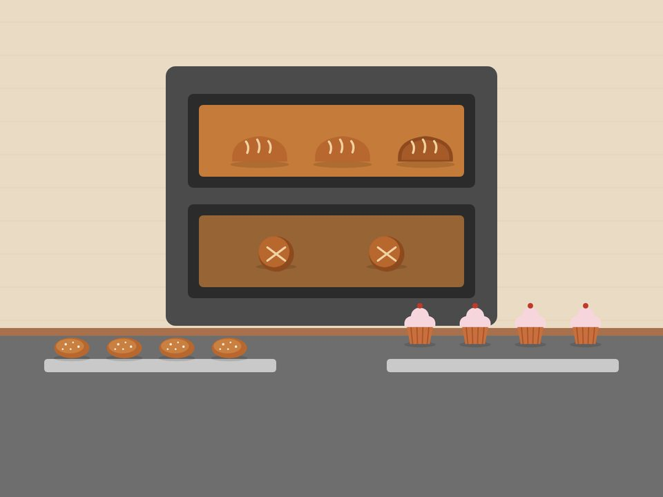

Our mission
To serve our community with high-quality, freshly baked goods made with care, and to make ordering, celebrating and getting in touch with us simple and convenient.
In 2014 Farzana Desai started baking bread and koesisters in her kitchen for neighbours on the weekend. Word spread through the school gates and the mosque, and soon regulars were asking for standing weekly orders.
In 2018 the family opened a small shop on Victoria Road. Farzana’s son Jadeed took over the bread ovens, which is where the name “Jadeed’s Bread” comes from, and daughter Aisha began taking custom cake orders.
Today most orders still come in by phone and word of mouth. This website is our first step to making ordering easier for customers across the southern suburbs.

To serve our community with high-quality, freshly baked goods made with care, and to make ordering, celebrating and getting in touch with us simple and convenient.
To be the southern suburbs’ first choice for fresh daily bread and custom celebration cakes, known for friendly service in store and online.
Founder & head baker
Still makes every batch of koesister dough by hand, from her mother’s recipe.
Bread baker
In at 04:30 every morning. Responsible for the sourdough starter he calls “Uncle Boeta”.
Cakes & orders
Designs the celebration cakes and answers every enquiry that comes through this site.
Butter, free-range eggs and flour from a Western Cape mill. No premixes.
We supply two local school tuck shops and donate unsold bread every evening.
No pork or alcohol is used in any of our products.